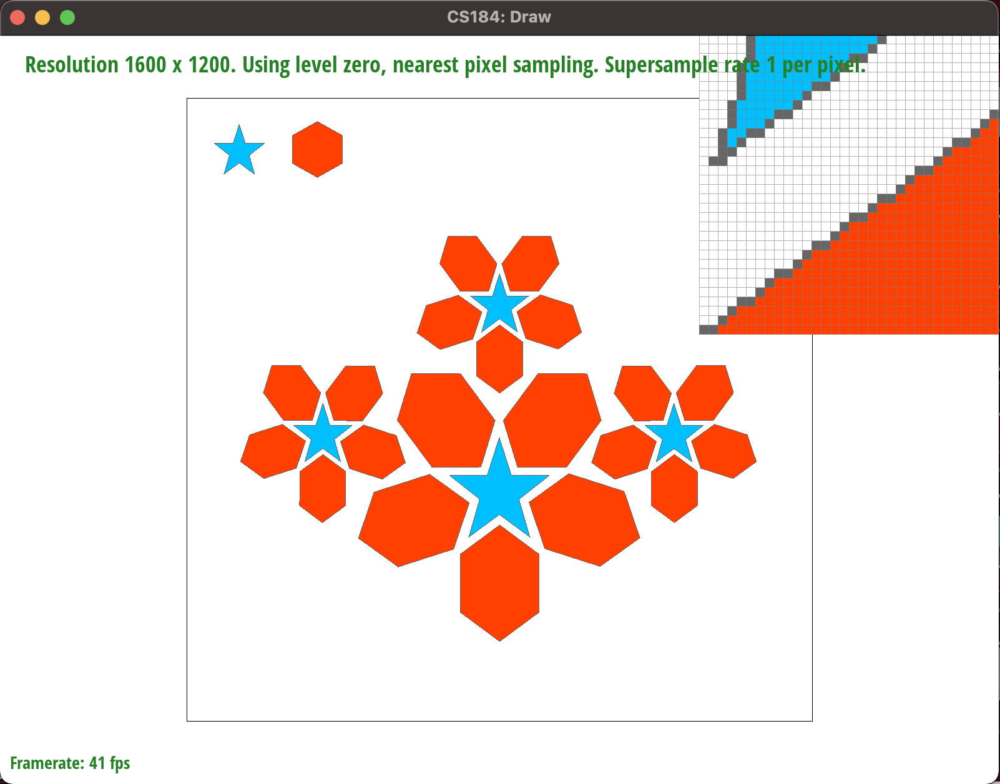
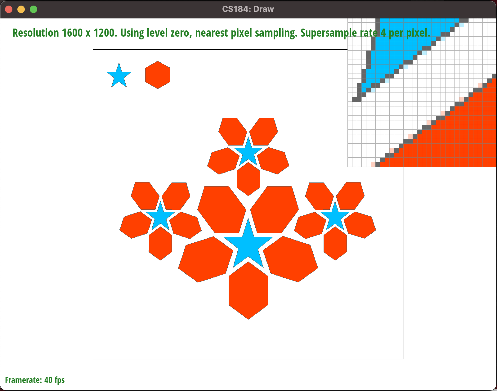
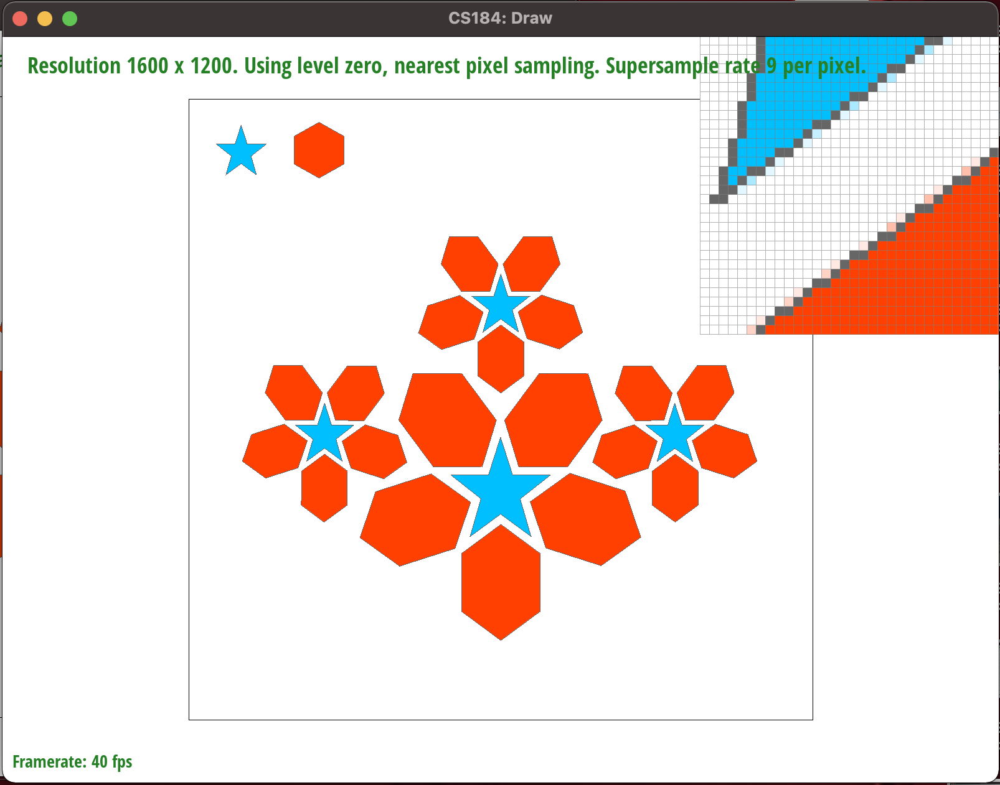
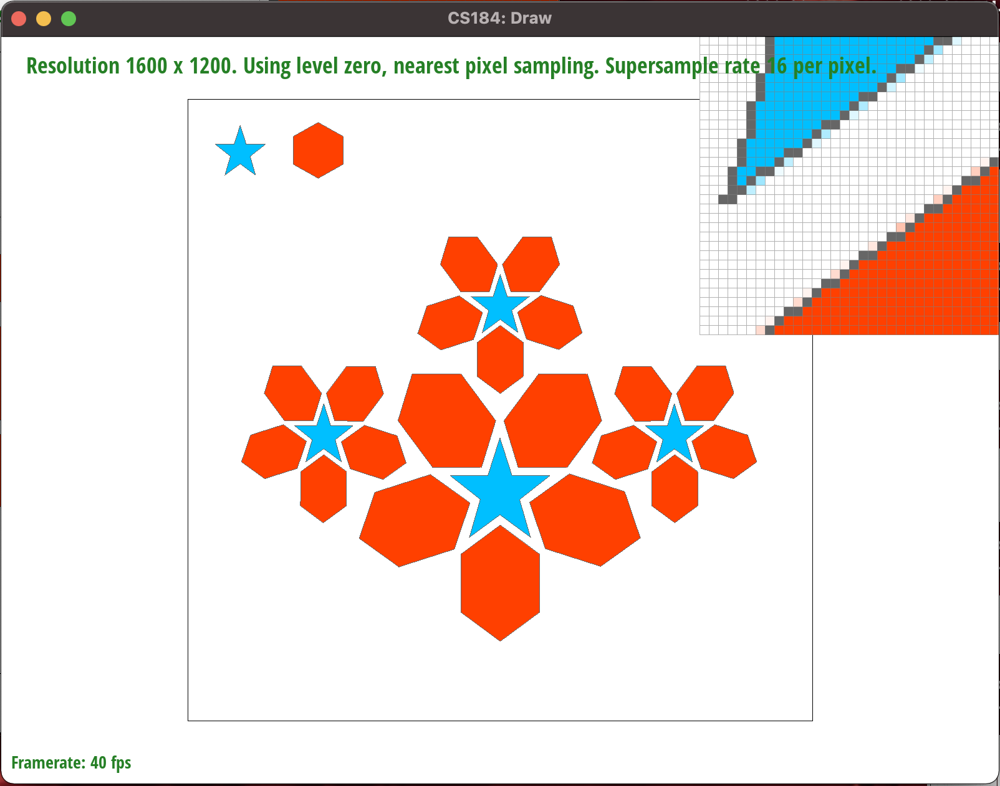
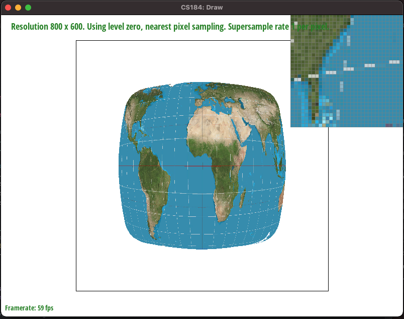
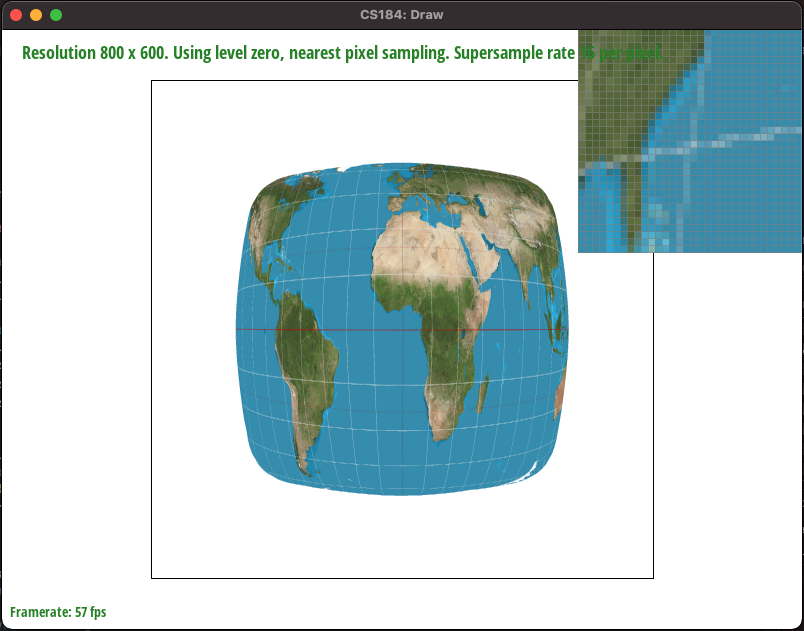
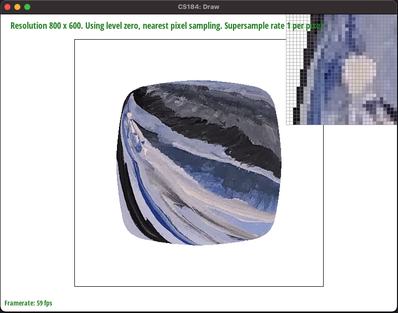
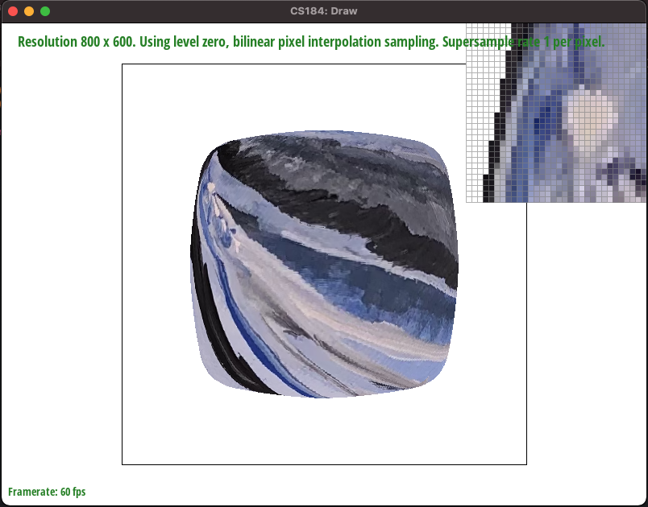
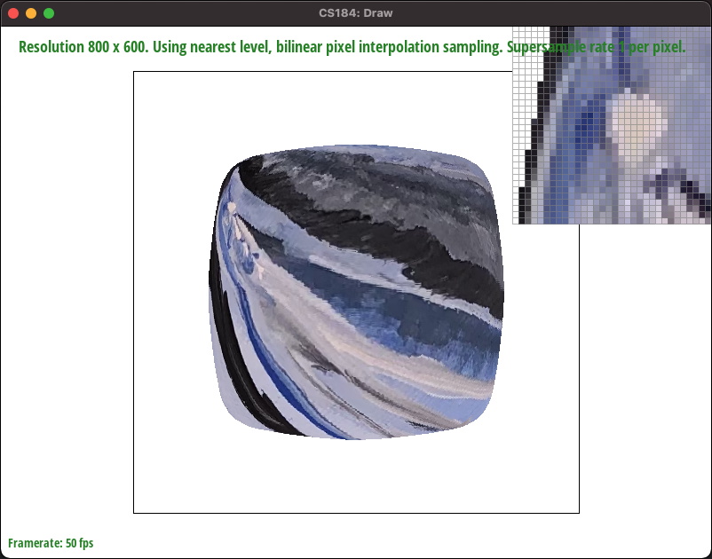

In this project I created a 2d rasterizer. I started by learning how to draw a color to the screen. From there, I was able to draw triangles to the screen using line checks. From there I optimized the process and implemented antialiasing to make the program smoother both aesthetically and functionally. I did this by supersampling with 1, 4, 9, and 16 inner samples per pixel drawn to the screen. I also implemented scaling, translation, and rotation transforms so that svgs could be manipulated. I also learned how we could use baycentric coordinates to find the location of a point in a triangle in relation to the vertices of said triangle. After this I was able to map textures to triangles in screen spaced based on their corresponding locations on the triangles in texture space. Finally, I used a technique called level sampling to render textured triangles by sampling their textures at different resolutions based on their location in screen space.
In this project we are told to implement a function that takes in the vertices of a triangle and draws that triangle to our screen.
We have two useful data structures that make doing this much easier.
The first is a sample buffer that allows us to take multiple samples per pixel
(if there are N samples per pixel and the frame buffer's size is M, then the sample buffer's size is NxM).
The second is a frame buffer that allows us to draw the pixel's color values to the screen in the rasterization pipeline.
The general workflow of rasterizing a triangle is coloring the sample buffer's pixels if they are within the triangle,
averaging the N samples in the sample buffer and filling the corresponding location in the frame buffer with that color,
then drawing the framebuffer to the screen.
To find if pixels are within the triangle, I use three line checks.
If we take a sample at point S and a triangle is made of vertices A, B, and C, then my line checks are the following:
Above I said the first part of rastering a triangle is coloring the sample buffer's pixels if they are within the triangle. If we do not optimize this, we will have to iterate through every sample location every time we want to draw a triangle to the screen. Luckily, we are given the vertices that make up the triangle we want to draw, so from those we could extract a bounding box around the triangle. The folloing is how we find important features of the bounding box:
I loop unrolled. I didn't have time but I was going to use parallel programming to use different threads in the for loop where we sample.
To supersample, I start by updating the size of the sample buffer proportionally to how many samples I take per pixel. This way if the supersample rate is N I can fill the sample buffer with N colors, then average those N colors down into one color when I resolve it to the frame buffer. With each buffer's abstraction in mind, this way pixel k in the framebuffer corresponds to the average Color taken from samples (k*N) through (k*N)+(N-1). Supersampling is super useful because it allows us mitigate some of the error that comes with taking one sample at each pixel location. Instead, we can take multiple samples and average them to better represent the colors found in the bounding box of the pixel location. For example, if the edge of a triangle cuts throught a pixel, using supersampling would allow us to display a color that represents both sides of the triangle at the same time. One modification I made to the rastering process was resising the sample buffer to N x length(frame buffer) where N is the number of samples per pixel. Another modification was changing the direct translation from sample buffer to frame buffer to a system that averages the colors from (k*N) through (k*N)+(N-1) then translating that averaged color to the frame buffer. A third modification was adding the code to do the supersampling itself. I decided to calculate the midpoints of the subgrids beforehand, then sample at the appropriate locations based on supersample rate. In my code this appears as a switch statement over the supersample rate, with loop unrolled instructions to sample at the appropriate midpoint locations. Functionally, this enabled me to antialias my triangles by reducing some of the the error caused by high frequencies in the svg I'm sampling. This way, high frequency artifacts such as jaggies are mitigated and blurred so that the transitions between shapes and colors are more fluid.
Below are 4 images of the bottom right of the biggest blue star with different supersample rates.
|

|

|
|

|

|
Evidentally, as the supersample rate goes up, the higher frequencies in the output are filtered out and the transition between colors becomes more blurred.
n/a
Barycentric coordinates define the location of a point relative to other points on an object, so that we can find the same location on an object after it has been transformed. Below there is an example of finding the same point on a triangle after translating it.
If we use the vertices and purple sample point on the left triangle to find alpha, beta, and gamma, then we could use the right triangle's vertices, alpha, beta, and gamma to find the right same purple point on the right triangle.
Pixel sampling is when we preform the computation described in the "Barycentric coordinate diagram" to find out how to texture our triangles.
In this case, the triange on the left is the triangle that we want to draw to the screen. We use the vertices of this triangle as well as the
point we want to sample to calculate alpha, beta, and gamma. Now that we have alpha, beta, and gamma, we can use them along with the texture
space triangle's vertices to find the sample point in texture space. Now that we have the coordinate of the sample point in texture space, we
can sample it to get the texture's color at the given point (even though the orientation of the triangle is different in screen space).
Textures have colors at discrete coordinates and samples can be taken at continuous points so we have to figure out how to color samples.
We call the colors at these discrete locations texels. The sampling methods I used that determine how to get the texture's color described below.
Nearest pixel sampling is when we sample a point using the methodology above, and determine it's color based on the closest
texel. This means that if we sample a point inbetween 4 different texels and draw a lines between the sample point and each texel, the color
we return will be the color of the texel with the shortest corresponding line.
Bilinear pixel interpolation is when we sample a point using the methodology above, and determine it's color based on a weighted combination of
all four surrounding texels. In this case, texels closer to the sample point will have more of a say in what color the sample returns than texels
further away from the sample point. The formula for bilinear pixel interpolation is (a * C1) + (b * C2) + (c * C3) + (d * C4).
Here C1, C2, C3, and C4 are colors corresponding to texels. Also a, b, c, and d are scalars such that the value of the scalar is
proportional their corresponding color's texel's distance from the sample point and a + b + c + d = 1.
Below I will deep dive svg/texmap/test2.svg to show the differences between nearest sampling and bilinear sampling.
|

|
|
|

|
|
As detailed above, bilinear sampling looks better in cases where there are high frequencies in the thing being sampled. We will see the largest differences between the methods when there is a huge jump in color within one pixel. In this case, bilinear sampling will filter out some of the higher frequencies and blend colors together while nearest sampling will show dramatic jumps in color (or jaggies). This is because the weighted sum of texels you use to do bilinear sampling will mix colors in the same pixel when there are dramatic changes, which makes the image appear more smooth. Nearest sampling fails to do so because it only chooses the closest texel to the sample point, which means the higher frequencies will be preserved in the output image.
We notice the details on objects close to us easier than we notice the details on objects that are far away.
The same idea holds for an sampling technique called level sampling, where we decrease the resolution of textures
as we sample objects further and further from our perspective in screen space. The general idea of level sampling
is to filter out high frequencies in textures so that they are easy to interpret when they are objects that are far
away. We do this while preserving the detail on objects that are close to our perspective as follows. Calculate the
"level" (distance from our perspective) that a triangle is on and sample a texture with the corresponding resolution.
This means for every texture, we will have multiple "mipmaps" that hold different resolutions of that texture.
Triangles close to the screen will sample high resolution mipmaps and triangles further away from the screen will
sample lower resolution mipmaps. The result is diminishing details as objects get further away from the screen.
To implement this, I calculated difference vectors for the x and y positions of an triangle from our perspective in screen space,
scaled them based on the dimensions of our buffers, used a formula to find how much the triangle is warped in screen space and
found the level accordingly, clamped the level based on the texture's dimensions, then used that level to retrieve a version of
the texture with appropriate resolution. Now that I have a texture, I can carry out with the "Pixel Sampling for texture mapping"
workflow above to raster the triangle with textures on it.
The pixel sampling methods we have are nearest and bilinear. Bilinear requires more computation because we need to access four
texel's colors and mix them before returning, while in nearest we only have to access one texel's color and return it. However,
the computation cost of using bilinear sampling seems generally worth it because it antialiases out high frequencies that make
images look smoother. Bilinear is slightly slower and can use more memory, but is better for antialiasing.
Level sampling in comparison to no level sampling is an interesting case. Zero level sampling is the fastest, nearest level
sampling is the second fastest, and bilinear is the slowest. This is because nearest needs to do extra computation to find
the associated level before sampling. Likewise, bilinear needs to do the extra computation to find the two closest levels, sample them,
then interpolate between them. With nearest and bilinear level sampling, we need to store the same texture at multiple different
resolutions, which means that level sampling requires more memory use. However, the storage of mipmaps only takes 1/3 the memory of
storing the full resolution texture itself and can be used strategically to improve preformance. An example of this is in Spyro the Dragon,
where textures increase in resolution as you get closer to them. This allowed artists to create a beautiful atmosphere while abiding to
the PlayStation 1's strict architecture. As for antialiasing, bilinear is the best, nearest is okay, and zero doesn't antialias.
I'm going to use the following png to hilight different sampling effects
Here you can see the differences between the sampling methods:
|

|

|
|
|

|
The easiest way to see the differences between each sampling method is by looking at the pixel inspector.
The pixel inspector was pointed at the top left of the image at the white ball where the paint streaks lead to.
L_ZERO and P_NEAREST is bad at antialiasing. It fails to filter out high frequencies that result in making the image
seem blocky. Notice the dark blue on the left of the white blue in the pixel inspector. This shows that this method
leaves in the high frequency color changes that we aim to eliminate. Additionally, this method fails to antialias based
on the distance from our perspective. Notice how the black and grey lines on the left of the pixel inspector do not blend.
L_ZERO and P_LINEAR antialiases better. It makes the transition to dark blue as described above a bit more bearable
and therefore accounts for high frequencies more than no antialiasing. Additionally, this method fails to antialias based
on the distance from our perspective. Notice how the black and grey lines on the left of the pixel inspector do not blend.
L_NEAREST and P_NEAREST is great at antialiasing. Its transition from light blue to dark blue is more smooth, but there are
still some sharp dark blue pixels that feel out of place. The transition from grey to black on the left is smooth and shows
us that perspective antialiasing is present.
L_NEAREST and P_LINEAR is the best at antialiasing. The dark blue high frequencies are completely mitigated and the grey
fades into black very nicely.
n/a
If you are not participating in the optional art competition, don't worry about this section!
n/a
https://cal-cs184-student.github.io/sp22-project-webpages-ethangnibus/